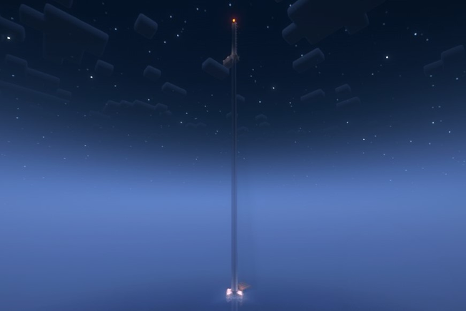
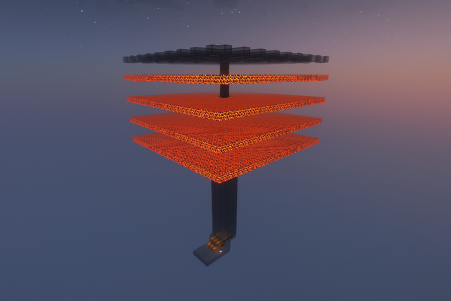
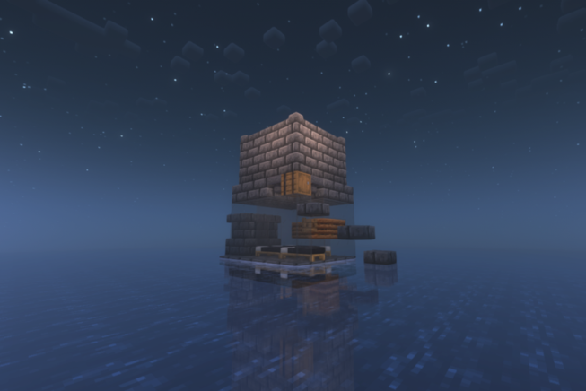

Автоматичні ферми
Ферма пороху
Ферма пороху на сніговиках - це ефективна та відносно не витратна автоматизована конструкція для видобування пороху. Сніговики, які складаються з блоків снігу та гарбузів, грають ключову роль у цій фермі, привертаючи увага кріперів. Коли кріпер помічає сніговика, він намагається дістати його і падає на багаття душ, де і помирає. Лійки збирають порох. Цей метод дає можливість отримувати порох без необхідності вручну вбивати кріперів. Для бажаної продуктивності треба будувати над океаном.
Автор/ідея: @Shulkercraft.


Ферма рейдів
Ферма рейдів - це автоматизований механізм, який дозволяє гравцеві легко збирати цінні предмети та ресурси, які випадають з рейдерів. Вона зазвичай побудована недалеко від селища та/або аванпосту розбійників. Складається ферма з умовної "арени", де рейдери з’являються та місця, де гравець вбиває їх. Крім того, ферма зазвичай має маленький склад. Особливістю цієї ферми є будівництво виключно над океаном та можливість викликати рейди скільки завгодно разів вбивши тільки одно розбійника зі стягом.
Ідея: @LaZ1en.
Ферма золота
Ферма золота дозволяє гравцеві отримувати шматочки золота та гнилу плоть, оскільки ферма працює на свинозомбі.Ферму варто будувати на даху Незера, куди можна потрапити за допомогою драбини та перлини Енду. Складається ферма з 4 магмових платформ на яких з'являються свинозомбі, скляного даху, щоб унеможливити спавн гастів, та лійок зі скринями знизу ферми, куди свинозомбі падають намагаючись зламати яйця черепахи.
Автор/ідея: @Shulkercraft.


Ферма заліза
Ця ферма заліза є однією з найпростіших і майже не потребує ресурсів гравця. Вона розташована над океаном (або у 20 блоках над землею) і являє собою кімнату, в якій житимуть 4 селянина. (Можна і 3 селянина, але з 4 продуктивність буде кращою.) Поряд з селянами знаходиться зомбі, який або був названий біркою, або тримає в руці якийсь предмет. Над цією кімнатою збудовано платформу для появи залізного голема. Вода буде змивати залізного голема в лаву. Отримане залізо падає у лійки, з'єднані зі скринькою.